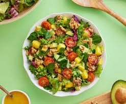
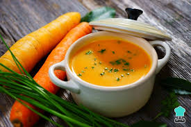

Recetas saludables
Comer bien no se logra solo a base de ensaladas sino de una dieta equilibrada y variada.
Es importante que los platos resulten también atractivos en cuanto a colores y olores (por supuesto, sabores).
Además, debemos quitarnos de la cabeza que los platos no pueden tener grasa, porque las hay que aportan beneficios
a nuestro organismo, como los pescados y frutos secos.
Si buscas inspiración, te dejamos con algunas de las mejores
recetas saludables para comer y cenar que te encantarán y te ayudarán a comer más sano, pero sin perder a pasión por la comida.
Ensalada con Aguacate
Ingredientes:
- 1 bolsa de brotes tiernos
- 8 Fresones
- 32 Fresas
- 16 Tomates Cherry
- 1 Aguacate
- 1/2 de Limón
- 1 Naranja
- 1 Cucharada de aceite de Oliva
Preparación:
Paso 1. Exprime la naranja y mezcla su zumo, el aceite de oliva, el dátil sin semilla y un pellizquito de pimienta negra
recién molida en la batidora. Bate hasta obtener una mezcla suave y añade las semillas de amapola al final.
Paso 2. Pela el aguacate, retírale el hueso y corta su pulpa en cubitos de unos 2 cm.
Rocíalos con zumo de limón para que no se oxiden.
Paso 3. Corta los tomates cherry en mitades y los fresones en mitades o cuartos,
dependiendo del tamaño que tengan.
Paso 4. Monta los platos. Divide mentalmente el plato en 4 partes, como si fuera la esfera de un reloj,
y pon en una los brotes tiernos de ensalada, en otra los tomates, en otra los fresones y en otra el aguacate.
Paso 5. Decora la ensalada con las fresas y acompáñala de la vinagreta de naranja con semillas de amapola..

Crema de Zanahoria
Ingredientes:
- 1/2 kg de Zanahorias
- 1 Ceboolla
- 2 Naranjas
- 60 g de Mantequilla
- 400ml de Caldo de Pollo
- 100 ml de Nata líquida
- 50g de Queso Parmesano
- 20g de Piñones
Preparación:
Paso 1. Pela la cebolla y las zanahorias, y trocéalas. Rehoga la primera en la mantequilla 2 min.
Añade la zanahoria, espolvorea con la harina, vierte el caldo, salpimenta y cuece 10 min.
Paso 2. Pica los piñones y mézclalos con el queso. Forma los crujientes de queso fundiendo 4 cucharadas
de la mezcla en una sartén. Haz 8 crujientes. Este paso es opcional, prescinde de él si no tienes ingredientes
o si no te quieres complicar.
Paso 3. Tritura la verdura, añade el zumo de las naranjas y la nata a la crema de zanahoria, ajusta de sal y remueve.
Paso 4. Reparte la crema en 4 cuencos y sírvela decorada con los crujientes de queso y piñones.
